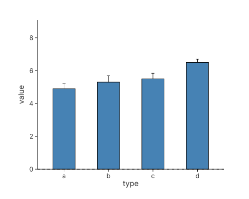
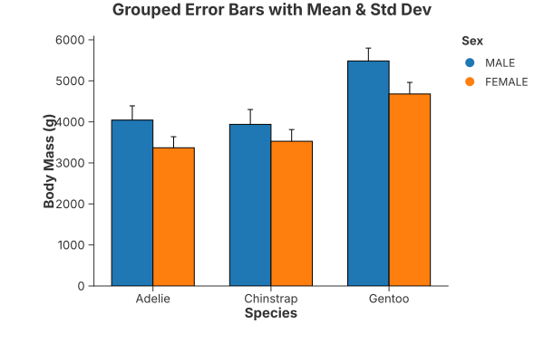
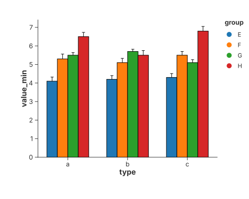

Introduction
What is Charton? (The Core Idea)
Charton is a modern Rust visualization library designed around a simple, declarative framework for data visualization.
- Declarative API: It offers an API similar to Python’s Altair/Vega-Lite, allowing users to define “what to visualize” rather than “how to draw it.”. That is, “the Grammar of Graphics”.
- Native Polars Support: Charton is tightly integrated with the high-performance Rust DataFrame library Polars, enabling efficient, zero-copy data plotting.
- Dual Rendering Capability: You can utilize its pure Rust SVG renderer for dependency-free plotting, or leverage its IPC mechanism to seamlessly connect with external Python visualization ecosystems like Altair and Matplotlib.
Design Philosophy and Key Advantages
Charton is engineered to be an efficient, safe, and flexible solution, built on the principle that visualization should be declarative.
- 🚀 Performance and Safety: It leverages Rust’s strong type system to achieve compile-time safety and utilizes Polars’ integration for superior data handling performance.
- 💡 Layered and Expressive: It features a multi-layer plotting architecture that easily combines various marks (e.g., points, lines, bars, boxplots, error bars) within a shared coordinate system to create complex composite visualizations.
- 🌐 Frontend Ready: It can generate standard Vega-Lite JSON specifications, making it ready for easy integration into modern web applications using libraries like React-Vega or Vega-Embed.
- 🔗 Efficient Integration: Through Inter-Process Communication (IPC), it efficiently communicates with external Python libraries, avoiding slow, temporary file operations and maintaining compatibility with environments like Conda in Jupyter.
- 📓 Jupyter Interactivity: It offers native support for the evcxr Jupyter Notebook environment, enabling interactive and real-time exploratory data analysis.
System Architecture
Charton adopts a modern, decoupled architecture designed for high-performance data processing and cross-language interoperability.
┌───────────────────────────────────────────────────────────────────────────┐
│ Input Layer │
│ ┌──────────────┐ ┌──────────────┐ ┌──────────────────────────────┐ │
│ │ Rust Polars │ │ External │ │ Jupyter/evcxr Interactive │ │
│ │ DataFrame/ │ │ Datasets │ │ Input │ │
│ │ LazyFrame │ │ (CSV/Parquet)│ │ (Notebook cell data/commands)│ │
│ └──────────────┘ └──────────────┘ └──────────────────────────────┘ │
└────────────────────────────────────┬──────────────────────────────────────┘
│
┌────────────────────────────────────▼──────────────────────────────────────┐
│ Core Layer │
│ ┌──────────────────────────────────────────────────────────────────────┐ │
│ │ Charton Core Engine │ │
│ │ ┌──────────────┐ ┌───────────────┐ ┌──────────────────────┐ │ │
│ │ │ Declarative │ │ Layered │ │ Cross-backend Data │ │ │
│ │ │ API (Altair- │ │ Chart │ │ Converter │ │ │
│ │ │ style) │ │ Management │ │ (Rust ↔ Python/JSON) │ │ │
│ │ └──────────────┘ │ (LayeredChart)│ └──────────────────────┘ │ │
│ │ └───────────────┘ │ │
│ │ ┌──────────────┐ ┌───────────────┐ ┌──────────────────────┐ │ │
│ │ │ Data │ │ IPC │ │ Vega-Lite Spec │ │ │
│ │ │ Validation/ │ │ Communication │ │ Generator │ │ │
│ │ │ Mapping │ │ Module │ │ │ │ │
│ │ └──────────────┘ └───────────────┘ └──────────────────────┘ │ │
│ └──────────────────────────────────────────────────────────────────────┘ │
└────────────────────────────────────┬──────────────────────────────────────┘
│
┌────────────────────────────────────▼──────────────────────────────────────┐
│ Render Backends │
│ ┌──────────────────────┐ ┌────────────────────────────────────────┐ │
│ │ Rust Native Backend │ │ External Cross-Language Backends │ │
│ │ │ │ │ │
│ │ ┌────────────────┐ │ │ ┌─────────────┐ ┌──────────────────┐ │ │
│ │ │ Pure Rust SVG │ │ │ │ Altair │ │ Matplotlib │ │ │
│ │ │ Renderer │ │ │ │ Backend │ │ Backend │ │ │
│ │ └────────────────┘ │ │ │ (Python IPC)│ │ (Python IPC) │ │ │
│ │ │ │ └─────────────┘ └──────────────────┘ │ │
│ │ ┌────────────────┐ │ │ │ │
│ │ │ Wasm Renderer │ │ │ ┌────────────┐ ┌──────────────────┐ │ │
│ │ │ (Partial │ │ │ │ Other │ │ Extended Backends│ │ │
│ │ │ Support) │ │ │ │ Python │ │ (Future) │ │ │
│ │ └────────────────┘ │ │ │ Viz Libs │ │ (R/Julia, etc.) │ │ │
│ │ │ │ └────────────┘ └──────────────────┘ │ │
│ └──────────────────────┘ └────────────────────────────────────────┘ │
└────────────────────────────────────┬──────────────────────────────────────┘
│
┌────────────────────────────────────▼──────────────────────────────────────┐
│ Output Layer │
│ ┌──────────────┐ ┌──────────────┐ ┌──────────────┐ ┌──────────────┐ │
│ │ SVG Vector │ │ Vega-Lite │ │ PNG Bitmap │ │ Jupyter │ │
│ │ Graphics │ │ JSON │ │ Image │ │ Inline │ │
│ │ (Native/Wasm)│ │ (for Web) │ │ (via Ext.) │ │ Rendering │ │
│ └──────────────┘ └──────────────┘ └──────────────┘ └──────────────┘ │
└───────────────────────────────────────────────────────────────────────────┘
1. Input Layer (Data Orchestration)
- Polars-Native: Unlike other libraries that require heavy data cloning, Charton is built on Apache Arrow (via Polars), enabling efficient, zero-copy data access.
- Versatile Sourcing: It supports
DataFrameandLazyFrame, allowing for out-of-core data processing before visualization.
2. Core Layer (The Grammar Engine)
- Declarative DSL: A type-safe implementation of the Grammar of Graphics, allowing users to compose complex visualizations using intuitive tuples (e.g.,
.encode((x, y, color))). - Universal Data Bridge: This is the core innovation of Charton. It utilizes Parquet-serialized bytes as an intermediate format to exchange data between different Polars versions and languages, effectively bypassing Rust’s orphan rules and dependency conflicts.
- Vega-Lite Spec Generator: A high-level compiler that transforms Rust structures into standard Vega-Lite JSON for seamless frontend integration.
3. Render Backends (Multi-Engine)
- Rust Native Backend: A zero-dependency, pure Rust implementation. It uses a custom SVG renderer for ultra-fast, server-side batch generation and provides partial support for WebAssembly (Wasm).
- IPC Bridge (External): For features not yet in the native engine, Charton provides a high-speed Inter-Process Communication (IPC) bridge to Python’s mature ecosystem (Altair/Matplotlib), eliminating the need for slow temporary disk I/O.
4. Output Layer (Multi-Format Delivery)
- Vector & Raster: Support for SVG and high-resolution PNG (via
resvg). - Web & Notebook: Direct JSON output for React/Vue integration and inline rendering for evcxr Jupyter notebooks.
Why This Architecture Matters
🚀 Solving the “Version Hell”
In the Rust ecosystem, if your project depends on Polars v0.50 and a plotting library depends on v0.40, your code won’t compile. Charton’s Parquet-encoded IPC bypasses this entirely, making it the most robust visualization tool for production Rust environments.
🔌 Hot-Swappable Backends
You can develop interactively using the Altair backend to leverage its rich feature set, and then switch to the Native SVG backend for deployment to achieve maximum performance and minimum container size.
🌐 Frontend-First Design
By generating standard Vega-Lite JSON, Charton allows you to handle heavy data lifting in Rust while letting the browser’s GPU handle the final rendering via Vega-Embed or React-Vega.
Quick Start
Welcome to Charton Quick Start!
This chapter will guide you through creating charts in Rust using Charton from scratch. By the end of this chapter, you’ll know how to:
- Initialize a Rust project and add Charton dependencies
- Load and preprocess data using Polars
- Build charts using Chart, Mark, and Encoding
- Render charts in multiple formats and environments
- Avoid common pitfalls and errors
The goal is to make you productive within minutes.
Project Setup
First, create a new Rust project:
cargo new demo
cd demo
Edit your Cargo.toml to add Charton and Polars dependencies:
[dependencies]
charton = "0.3"
polars = { version = "0.49", features = ["lazy", "csv", "parquet"] }
Run cargo build to ensure everything compiles.
Creating Your First Chart
Charton adopts a declarative visualization philosophy, drawing heavily from the design principles of Altair and Vega-Lite. Every Charton chart is composed of three core elements which allow you to specify what you want to see, rather than how to draw it:
- Chart – The base container that holds your data (
Chart::build(&df)). - Mark – The visual primitive you choose (point, bar, line, etc., defined by
.mark_point()). - Encoding – The mapping that links data fields to visual properties (x, y, color, size, etc., defined by
.encode(...)).
Example: Analyzing Car Weight vs. MPG (Scatter Plot)
This minimal Charton example uses the built-in mtcars dataset to create a scatter plot of car weight (wt) versus miles per gallon (mpg).
use charton::prelude::*;
use polars::prelude::*;
fn main() -> Result<(), Box<dyn std::error::Error>> {
// 1. Data Preparation (Polars)
let df = load_dataset("mtcars")?
.lazy()
.with_columns([col("gear").cast(DataType::String)]) // Cast 'gear' for categorical coloring
.collect()?;
// 2. Chart Declaration (Chart, Mark, Encoding)
Chart::build(&df)? // Chart: Binds the data source
.mark_point()? // Mark: Specifies the visual primitive (dots)
.encode((
x("wt"), // Encoding: Maps 'wt' (weight) to the X-axis
y("mpg"), // Encoding: Maps 'mpg' (fuel efficiency) to the Y-axis
))?
// 3. Converted to Layered Chart
.into_layered()
// 4. Saving the Layered Chart to SVG
.save("./scatter_chart.svg")?;
println!("Chart saved to scatter_chart.svg");
Ok(())
}You can also display the result directly in your evcxr jupyter notebook using the show() method for quick iteration:
#![allow(unused)]
fn main() {
// ... (using the same 'df' DataFrame)
Chart::build(&df)?
.mark_point()?
.encode((x("wt"), y("mpg")))?
.into_layered()
.show()?;
}You can even save the chart object to a variable and use it later. For example:
#![allow(unused)]
fn main() {
// ... (using the same 'df' DataFrame)
let chart = Chart::build(&df)?
.mark_point()?
.encode((x("wt"), y("mpg")))?
.into_layered();
chart.save("./scatter_chart.svg")?; // or chart.show()?
}This mirrors the declarative style of Altair, now in Rust.
Explicit form
The code above is equivalent to the following explicit construction using LayeredChart (see chapter 5).
use charton::prelude::*;
use polars::prelude::*;
fn main() -> Result<(), Box<dyn std::error::Error>> {
// 1. Data Preparation (Polars)
let df = load_dataset("mtcars")?
.lazy()
.with_columns([col("gear").cast(DataType::String)]) // Cast 'gear' for categorical coloring
.collect()?;
// 2. Chart Declaration (Chart, Mark, Encoding)
let scatter = Chart::build(&df)? // Chart: Binds the data source
.mark_point()? // Mark: Specifies the visual primitive (dots)
.encode((
x("wt"), // Encoding: Maps 'wt' (weight) to the X-axis
y("mpg"), // Encoding: Maps 'mpg' (fuel efficiency) to the Y-axis
))?;
// 3. Create a layered chart
LayeredChart::new()
.add_layer(scatter) // Add the chart as a layer of the layered chart
.save("./scatter_chart.svg")?; // Save the layered chart
println!("Chart saved to scatter_chart.svg");
Ok(())
}Loading and Preparing Data
Before creating visualizations, Charton requires your data to be stored in a Polars DataFrame. Charton itself does not impose restrictions on how data is loaded, so you can rely on Polars’ powerful I/O ecosystem.
Built-in Datasets
Charton provides a few built-in datasets for quick experimentation, demos, and tutorials.
#![allow(unused)]
fn main() {
let df = load_dataset("mtcars")?;
}This returns a Polars DataFrame ready for visualization.
Loading CSV Files
CSV is the most common format for tabular data. Using Polars:
#![allow(unused)]
fn main() {
use polars::prelude::*;
let df = CsvReadOptions::default()
.with_has_header(true)
.try_into_reader_with_file_path(Some("./datasets/iris.csv".into()))?
.finish()?;
}Loading Parquet Files
Parquet is a high-performance, columnar storage format widely used in data engineering.
#![allow(unused)]
fn main() {
let file = std::fs::File::open("./datasets/foods.parquet")?;
let df = ParquetReader::new(file).finish()?;
}Parquet is recommended for large datasets due to compression and fast loading.
Loading Data from Parquet Bytes (Vec<u8>) — Cross-Version Interoperability
One of the challenges when working with the Polars ecosystem is that different crates may depend on different Polars versions, which prevents passing DataFrame values directly between libraries. Charton solves this problem by offering a version-agnostic data exchange format based on Parquet-serialized bytes.
Charton provides an implementation of:
#![allow(unused)]
fn main() {
impl TryFrom<&Vec<u8>> for DataFrameSource
}This allows you to:
- Serialize a Polars
DataFrameinto Parquet bytes (Vec<u8>) - Pass those bytes to Charton
- Let Charton deserialize them internally using its Polars version
- Avoid Polars version conflicts entirely
This is especially useful when your application depends on a uncompatible Polars version with Charton. By using Parquet bytes as the intermediate format, data can be exchanged safely across Polars versions.
Example: Passing a DataFrame to Charton Using Parquet Bytes
Below is a full example demonstrating:
- Creating a Polars
DataFrame - Serializing it into Parquet bytes using your Polars version
- Passing those bytes to Charton
- Rendering a scatter plot
Cargo.toml
[dependencies]
polars = { version = "0.51", features = ["parquet"] }
charton = { version = "0.3" }
Source Code Example
use charton::prelude::*;
use polars::prelude::*;
use std::error::Error;
fn main() -> Result<(), Box<dyn Error>> {
// Create a Polars DataFrame using Polars 0.51
let df = df![
"length" => [5.1, 4.9, 4.7, 4.6, 5.0, 5.4, 4.6, 5.0, 4.4, 4.9],
"width" => [3.5, 3.0, 3.2, 3.1, 3.6, 3.9, 3.4, 3.4, 2.9, 3.1]
]?;
// Serialize DataFrame into Parquet bytes
let mut buf: Vec<u8> = Vec::new();
ParquetWriter::new(&mut buf).finish(&mut df.clone())?;
// Build a Chart using the serialized Parquet bytes
Chart::build(&buf)?
.mark_point()?
.encode((
x("length"),
y("width"),
))?
.into_layered()
.save("./scatter.svg")?;
Ok(())
}Simple Plotting Examples
This section introduces the most common chart types in Charton.
Line Chart
#![allow(unused)]
fn main() {
// Create a polars dataframe
let df = df![
"length" => [4.4, 4.6, 4.7, 4.9, 5.0, 5.1, 5.4], // In ascending order
"width" => [2.9, 3.1, 3.2, 3.0, 3.6, 3.5, 3.9]
]?;
// Create a line chart layer
Chart::build(&df)?
.mark_line()? // Line chart
.encode((
x("length"), // Map length column to X-axis
y("width"), // Map width column to Y-axis
))?
.into_layered()
.save("line.svg")?;
}Useful for trends or ordered sequences.
Bar Chart
#![allow(unused)]
fn main() {
let df = df! [
"type" => ["a", "b", "c", "d"],
"value" => [4.9, 5.3, 5.5, 6.5],
]?;
Chart::build(&df)?
.mark_bar()?
.encode((
x("type"),
y("value"),
))?
.into_layered()
.save("bar.svg")?;
}Histogram
#![allow(unused)]
fn main() {
let df = load_dataset("iris")?;
Chart::build(&df)?
.mark_hist()?
.encode((
x("sepal_length"),
// The number of data points (or Frequency) falls into the corresponding bin are named "count".
// You can use any arbitray name for the y-axis, here we use "count".
y("count")
))?
.into_layered()
.save("hist.svg")?;
}Charton automatically computes bin counts when y("count") is specified.
Boxplot
#![allow(unused)]
fn main() {
let df = load_dataset("iris")?;
Chart::build(&df)?
.mark_boxplot()?
.encode((x("species"), y("sepal_length")))?
.into_layered()
.save("boxplot.svg")?;
}Boxplots summarize distributions using quartiles, medians, whiskers, and outliers.
Layered Charts
In Charton, complex visualizations are built by layering multiple charts on the same axes. Each layer defines a single mark type, and layers are composed to form a unified view with shared scales and coordinates.
use charton::prelude::*;
use polars::prelude::*;
fn main() -> Result<(), Box<dyn std::error::Error>> {
// Create a polars dataframe
let df = df![
"length" => [4.4, 4.6, 4.7, 4.9, 5.0, 5.1, 5.4],
"width" => [2.9, 3.1, 3.2, 3.0, 3.6, 3.5, 3.9]
]?;
// Create a line chart layer
let line = Chart::build(&df)?
.mark_line()? // Line chart
.encode((
x("length"), // Map length column to X-axis
y("width"), // Map width column to Y-axis
))?;
// Create a scatter point layer
let scatter = Chart::build(&df)?
.mark_point()? // Scatter plot
.encode((
x("length"), // Map length column to X-axis
y("width"), // Map width column to Y-axis
))?;
LayeredChart::new()
.add_layer(line) // Add the line layer
.add_layer(scatter) // Add the scatter point layer
.save("./layeredchart.svg")?;
Ok(())
}Exporting Charts
Charton supports exporting charts to different file formats depending on the selected rendering backend. All backends share the same API:
#![allow(unused)]
fn main() {
chart.save("output.png")?;
}The file format is inferred from the extension.
This section describes the supported formats and saving behavior for each backend.
Rust Native Backend
The Rust native backend is the default renderer and supports:
- SVG — vector graphics output
- PNG — rasterized SVG (using resvg with automatic system font loading)
Saving SVG
#![allow(unused)]
fn main() {
chart.save("chart.svg")?;
}Saving PNG
PNG is generated by rasterizing the internal SVG at 2× resolution:
#![allow(unused)]
fn main() {
chart.save("chart.png")?;
}This produces high-quality PNG output suitable for publication.
Altair Backend (Vega-Lite)
The Altair backend uses Vega-Lite as the rendering engine and supports:
- SVG — via Vega → SVG conversion
- PNG — SVG rasterized via resvg
- JSON — raw Vega-Lite specification
Saving SVG
#![allow(unused)]
fn main() {
chart.save("chart.svg")?;
}Saving PNG
#![allow(unused)]
fn main() {
chart.save("chart.png")?;
}Saving Vega-Lite JSON
#![allow(unused)]
fn main() {
chart.save("chart.json")?;
}The JSON file can be opened directly in the online Vega-Lite editor.
Matplotlib Backend
The Matplotlib backend supports:
- PNG — returned as base64 from Python, decoded and saved
Saving PNG
#![allow(unused)]
fn main() {
chart.save("chart.png")?;
}Other formats (SVG, JSON, PDF, etc.) are not currently supported by this backend.
Unsupported Formats & Errors
Charton will return an error if:
- The file extension is missing
- The extension is not supported by the selected backend
- SVG → PNG rasterization fails
- File write errors occur
Example:
#![allow(unused)]
fn main() {
if let Err(e) = chart.save("output.bmp") {
eprintln!("Save error: {}", e);
}
}Summary of Supported Formats
| Backend | SVG | PNG | JSON |
|---|---|---|---|
| Rust Native | ✔️ | ✔️ | ❌ |
| Altair | ✔️ | ✔️ | ✔️ |
| Matplotlib | ❌ | ✔️ | ❌ |
Exporting Charts as Strings (SVG / JSON)
In addition to saving charts to files, Charton also supports exporting charts directly as strings. This is useful in environments where writing to disk is undesirable or impossible, such as:
- Web servers returning chart data in API responses
- Browser/WASM applications
- Embedding charts into HTML templates
- Passing Vega-Lite specifications to front-end visualizers
- Testing and snapshot generation
Charton provides two kinds of in-memory exports depending on the backend.
SVG Output (Rust Native Backend)
The Rust-native renderer can generate the complete SVG markup of a chart and return it as a String:
#![allow(unused)]
fn main() {
let svg_string = chart.to_svg()?;
}This returns the full <svg>...</svg> element including:
- Layout
- Axes
- Marks
- Legends
- Background
The string can be:
- Embedded directly into HTML
- Returned from a web API
- Rendered inside a WASM application
- Passed to a templating engine such as Askama or Tera
Example
#![allow(unused)]
fn main() {
let svg = chart.to_svg()?;
}Vega-Lite JSON (Altair Backend) When using the Altair backend, charts can be exported as raw Vega-Lite JSON:
#![allow(unused)]
fn main() {
let json = chart.to_json()?;
}This produces the complete Vega-Lite specification generated by Altair. Typical usage scenarios include:
- Front-end rendering using Vega/Vega-Lite
- Sending the chart spec from a Rust API to a browser client
- Storing chart specifications in a database
- Generating reproducible visualization specs
Example
#![allow(unused)]
fn main() {
let json_spec = chart.to_json()?;
println!("{}", json_spec);
}This JSON is fully compatible with the official online Vega-Lite editor.
Summary: In-Memory Export Methods
| Backend | to_svg() | to_json() |
|---|---|---|
| Rust Native | ✔️ SVG string | ❌ unsupported |
| Altair | ❌ (file-only) | ✔️ Vega-Lite JSON string |
| Matplotlib | ❌ | ❌ |
String-based export complements file export by enabling fully in-memory rendering and programmatic integration.
Viewing Charts
Charton charts can be viewed directly inside Evcxr Jupyter notebooks using the .show() method.
When running inside Evcxr Jupyter, Charton automatically prints the correct MIME content so that the chart appears inline.
Outside Jupyter (e.g., running a binary), .show() does nothing and simply returns Ok(()).
The rendering behavior differs depending on the selected backend.
Rust Native Backend
The Rust-native backend renders charts to inline SVG.
When .show() is called inside Evcxr Jupyter, the SVG is printed using text/html MIME type.
Example
#![allow(unused)]
fn main() {
use charton::prelude::*;
use polars::prelude::*;
let df = df![
"x" => [1, 2, 3],
"y" => [10, 20, 30]
]?;
let chart = Chart::build(&df)?
.mark_point()?
.encode((x("x"), y("y")))?
.into_layered();
chart.show()?; // displays inline SVG in Jupyter
}Internal Behavior
EVCXR_BEGIN_CONTENT text/html
<svg>...</svg>
EVCXR_END_CONTENT
This enables rich inline SVG display in notebooks.
Altair Backend (Vega-Lite)
When using the Altair backend, .show() emits Vega-Lite JSON with the correct MIME type:
application/vnd.vegalite.v5+json
Jupyter then renders the chart using the built-in Vega-Lite renderer.
Example
#![allow(unused)]
fn main() {
chart.show()?; // displays interactive Vega-Lite chart inside Jupyter
}Internal Behavior
EVCXR_BEGIN_CONTENT application/vnd.vegalite.v5+json
{ ... Vega-Lite JSON ... }
EVCXR_END_CONTENT
This produces interactive charts (tooltips, zooming, etc.) if supported by the notebook environment.
Matplotlib Backend
The Matplotlib backend produces base64-encoded PNG images and sends them to the notebook using image/png MIME type.
Example
#![allow(unused)]
fn main() {
chart.show()?; // displays inline PNG rendered by Matplotlib
}Internal Behavior
EVCXR_BEGIN_CONTENT image/png
<base64 image>
EVCXR_END_CONTENT
Summary: What .show() displays in Jupyter
| Backend | Output Type | MIME Type |
|---|---|---|
| Rust Native | SVG | text/html |
| Altair | Vega-Lite | application/vnd.vegalite.v5+json |
| Matplotlib | PNG | image/png |
.show() is designed to behave naturally depending on the backend, giving the best viewing experience for each renderer.
Summary
In this chapter, you learned how to:
- Load datasets from CSV, Parquet, and built-in sources
- Create essential chart types: scatter, bar, line, histogram, boxplot, layered plots
- Export your charts to SVG, PNG, and Vega JSON
- Preview visualizations in the notebook
With these foundations, you now have everything you need to build end-to-end data visualizations quickly and reliably. The next chapters will introduce the building blocks of Charton, including marks and eocodings.
The Data Engine (Polars)
System Architecture
Coordinate Systems
Encodings
Encodings are the core of Charton’s declarative visualization system. They determine how data fields map to visual properties such as:
- Position (
x,y,y2,theta) - Color
- Shape
- Size
- Text labels
Every chart in Charton combines:
- A mark (point, line, bar, arc, rect, etc.)
- Encodings that map data fields to visual channels
This chapter explains all encoding channels, how they work, and provides complete code examples using mtcars.
What Are Encodings?
An encoding assigns a data field to a visual channel.
#![allow(unused)]
fn main() {
Chart::build(&df)?
.mark_point()
.encode((
x("hp"),
y("mpg"),
color("cyl"),
))?;
}This produces a scatter plot:
- X axis → horsepower
- Y axis → miles per gallon
- Color → number of cylinders
Encoding System Architecture
Every encoding implements the following trait:
#![allow(unused)]
fn main() {
pub trait IntoEncoding {
fn apply(self, enc: &mut Encoding);
}
}Users never interact with Encoding directly.
They simply write:
#![allow(unused)]
fn main() {
.encode((x("A"), y("B"), color("C")))
}The API supports tuple-based composition of up to 9 encodings.
Position Encodings
X – Horizontal Position
The X channel places data along the horizontal axis.
✔ When to use X
- Continuous values (e.g.,
hp,mpg,disp) - Categorical values (
cyl,gear,carb) - Histogram binning
- Log scales
API
#![allow(unused)]
fn main() {
x("column_name")
}Optional settings
#![allow(unused)]
fn main() {
x("hp")
.with_bins(30)
.with_scale(Scale::Log)
.with_zero(true)
}Example: mtcars horsepower vs mpg
#![allow(unused)]
fn main() {
let df = load_dataset("mtcars");
Chart::build(&df)
.mark_point()
.encode((
x("hp"),
y("mpg"),
));
}Expected: Scatter plot showing hp vs mpg.
Y – Vertical Position
The Y channel has identical behavior to X.
Example
#![allow(unused)]
fn main() {
Chart::build(&df)
.mark_point()
.encode((
x("wt"),
y("mpg"),
));
}Expected: Heavier cars generally have lower mpg.
Y2 – Second Vertical Coordinate
Used when a mark needs two vertical positions:
- Interval bands
- Confidence intervals
- Error bars
- Range rules
Example: Upper & Lower MPG Bounds
#![allow(unused)]
fn main() {
Chart::build(&df)
.mark_area()
.encode((
x("hp"),
y("mpg_low"),
y2("mpg_high"),
));
}Angular Position: θ (Theta)
Used in:
- Pie charts
- Donut charts
- Radial bar charts
Example: Pie chart of cylinders
#![allow(unused)]
fn main() {
Chart::build(&df)
.mark_arc()
.encode((
theta("count"),
color("cyl"),
));
}Color Encoding
Color maps a field to the fill color of a mark.
✔ When to use
- Categorical grouping
- Continuous magnitude
- Heatmaps
- Parallel categories
Example: Color by gears
#![allow(unused)]
fn main() {
Chart::build(&df)
.mark_point()
.encode((
x("hp"),
y("mpg"),
color("gear"),
));
}Shape Encoding
Shape – Point Symbol Mapping
Only applies to point marks.
Available shapes include:
- Circle
- Square
- Triangle
- Cross
- Diamond
- Star
Example
#![allow(unused)]
fn main() {
Chart::build(&df)
.mark_point()
.encode((
x("hp"),
y("mpg"),
shape("cyl"),
));
}Size Encoding
Size – Radius / Area Encoding
Used for:
- Bubble plots
- Weighted scatter plots
- Emphasizing magnitude
Example: Bubble plot with weight
#![allow(unused)]
fn main() {
Chart::build(&df)
.mark_point()
.encode((
x("hp"),
y("mpg"),
size("wt"),
));
}Opacity Encoding
Opacity – Transparency
Used for:
- Reducing overplotting
- Encoding density
- Showing relative uncertainty
Example: Opacity mapped to horsepower
#![allow(unused)]
fn main() {
Chart::build(&df)
.mark_point()
.encode((
x("wt"),
y("mpg"),
opacity("hp"),
));
}Text Encoding
Text – Label Encoding
Works with:
- Point labels
- Bar labels
- Annotation marks
Example: Label each point with car model
#![allow(unused)]
fn main() {
Chart::build(&df)
.mark_text()
.encode((
x("hp"),
y("mpg"),
text("model"),
));
}Stroke Encoding
Stroke – Outline Color
Useful when:
- Fill color is already used
- Emphasizing boundaries
- Donut chart outlines
Example
#![allow(unused)]
fn main() {
Chart::build(&df)
.mark_point()
.encode((
x("hp"),
y("mpg"),
stroke("gear"),
));
}Stroke Width Encoding
Stroke Width – Border Thickness
Used for:
- Highlighting
- Encoding magnitude
- Interval charts
Example
#![allow(unused)]
fn main() {
Chart::build(&df)
.mark_point()
.encode((
x("hp"),
y("mpg"),
stroke_width("wt"),
));
}Combined Example: All Encodings
This chart uses eight encodings simultaneously:
#![allow(unused)]
fn main() {
Chart::build(&df)
.mark_point()
.encode((
x("hp"),
y("mpg"),
color("cyl"),
shape("gear"),
size("wt"),
opacity("qsec"),
stroke("carb"),
stroke_width("drat"),
));
}Expected:
A rich multi-dimensional visualization of mtcars.
Configuring Encodings (The Intent Pattern)
Charton uses a unified interface where you define your Intent (e.g., “I want this column to be on the X-axis using a Log scale”), and the engine handles the Resolution (calculating the actual pixel coordinates).
Each encoding (like X, Color, or Size) follows a Fluent Builder Pattern. You can refine how the mapping behaves by chaining methods on the encoding object before passing it to the chart.
Position Encoding (x, y)
Position encodings control the spatial layout.
#![allow(unused)]
fn main() {
chart.encode((
x("gdp")
.with_scale(Scale::Log) // Use logarithmic transformation
.with_domain(ScaleDomain::Continuous(0.0, 100.0)) // Force limits
.with_zero(false) // Don't force 0.0 into view
.with_bins(10), // Aggregate data into 10 bins
y("population")
))?
}Aesthetic Encoding (shape, size, opacity)
These control the “look” of the marks based on data values.
#![allow(unused)]
fn main() {
chart.encode((
color("species")
.with_scale(Scale::Ordinal), // Explicitly treat as categorical
size("magnitude")
.with_domain(ScaleDomain::Continuous(1.0, 10.0))
))?
}The “Intent vs. Resulution” Architecture
One of the most powerful features of Charton’s encoding system is the separation of User Intent and System Resolution.
- Intent (Inputs): When you call
x("price").with_scale(Scale::Log), you are defining a specification. - Resolution (Outputs): During the
build()phase, Charton’s engine scans the data, finds the min/max values, applies your overrides, and “back-fills” aResolvedScale.
Why this matters:
Because the resolved_scale is stored inside the encoding (often wrapped in an Arc), multiple layers can share the same scale. If you have a scatter plot and a regression line in the same chart, they will automatically synchronize their axes because they refer to the same resolved intent.
Avoiding “Mega-Methods”
Charton avoids polluting the main Chart API. Notice that methods like with_bins belong to the X or Y structs, not the Chart itself.
- Incorrect:
chart.set_x_bins(10)(Bloats the main API) - Correct:
chart.encode(x("col").with_bins(10))(Keeps logic namespaced)
This ensures that as Charton adds more complex encoding features (like time-unit formatting or custom color palettes), the top-level API remains clean and easy to navigate.
Tips & Best Practices
✔ Use color for major categories
Examples: cyl, gear, carb.
✔ Use size sparingly Only when magnitude matters.
✔ Avoid using both color & shape unless required Choose one main grouping.
✔ Use opacity to reduce overplotting mtcars has many overlapping data points.
✔ Avoid encoding more than 5 dimensions Human perception becomes overloaded.
Summary Table
| Channel | Purpose | Works With | Example |
|---|---|---|---|
x | horizontal position | all marks | x("hp") |
y | vertical position | all marks | y("mpg") |
y2 | interval upper bound | area, rule | y2("high") |
theta | angle (pie/donut) | arc | theta("count") |
color | fill color | all | color("cyl") |
shape | symbol | point | shape("gear") |
size | area/size | point | size("wt") |
opacity | transparency | point/area | opacity("hp") |
text | labels | text mark | text("model") |
stroke | outline color | point/rect/arc | stroke("carb") |
stroke_width | outline thickness | all | stroke_width("drat") |
Marks
Marks are the fundamental building blocks of Charton. A mark is any visible graphical primitive—points, lines, bars, areas, rectangles, arcs, text, boxplots, rules, histograms, and more.
Every chart in Charton is created by:
1. Constructing a base chart using Chart::build().
2. Selecting a mark type (e.g., mark_point(), mark_line()).
3. Adding encodings that map data fields to visual properties.
Understanding marks is essential because most visual expressiveness comes from combining marks with encodings.
What Is a Mark?
In Charton, a mark is an object that implements the core trait:
#![allow(unused)]
fn main() {
pub trait Mark: Clone {
fn mark_type(&self) -> &'static str;
fn stroke(&self) -> Option<&SingleColor> { None }
fn shape(&self) -> PointShape { PointShape::Circle }
fn opacity(&self) -> f64 { 1.0 }
}
}Key Properties
| Property | Meaning | Provided by Trait |
|---|---|---|
mark_type | Unique identifier | required |
stroke | Outline color | default: none |
shape | Point shape | default: circle |
opacity | Transparency | default: 1.0 |
How Marks Work in Charton
A typical Charton chart:
#![allow(unused)]
fn main() {
Chart::build(&df)?
.mark_point()
.encode((
x("x"),
y("y")
))?
}Flow of Rendering
1. mark_point() creates a MarkPoint object.
2. Encodings specify how data fields map to visual properties.
3. Renderer merges:
- mark defaults
- overriding encoding mappings
- automatic palettes
4. The final SVG/PNG is generated.
Declarative Design Philosophy
Charton follows an Altair-style declarative model:
If an encoding exists → encoding overrides mark defaults.
If an encoding does not exist → use the mark’s own default appearance.
This gives you:
- Short expressions for common charts
- Fine-grained control when needed
Point Mark
MarkPoint draws scattered points.
Struct (simplified)
#![allow(unused)]
fn main() {
pub struct MarkPoint {
pub color: Option<SingleColor>,
pub shape: PointShape,
pub size: f64,
pub opacity: f64,
pub stroke: Option<SingleColor>,
pub stroke_width: f64,
}
}Use Cases
- Scatter plots
- Bubble charts
- Highlighting specific points
- Overlaying markers on other marks
Correct Example
#![allow(unused)]
fn main() {
Chart::build(&df)?
.mark_point()
.encode((
x("sepal_length"),
y("sepal_width"),
color("species"),
size("petal_length")
))?
}Line Mark
MarkLine draws connected lines.
Highlights
- Supports LOESS smoothing
- Supports interpolation
Struct
#![allow(unused)]
fn main() {
pub struct MarkLine {
pub color: Option<SingleColor>,
pub stroke_width: f64,
pub opacity: f64,
pub use_loess: bool,
pub loess_bandwidth: f64,
pub interpolation: PathInterpolation,
}
}Example
#![allow(unused)]
fn main() {
Chart::build(&df)?
.mark_line().transform_loess(0.3)
.encode((
x("data"),
y("value"),
color("category")
))?
}Bar Mark
A bar mark visualizes categorical comparisons.
Struct
#![allow(unused)]
fn main() {
pub struct MarkBar {
pub color: Option<SingleColor>,
pub opacity: f64,
pub stroke: Option<SingleColor>,
pub stroke_width: f64,
pub width: f64,
pub spacing: f64,
pub span: f64,
}
}Use Cases
- Vertical bars
- Grouped bars
- Stacked bars
- Horizontal bars
Example
#![allow(unused)]
fn main() {
Chart::build(&df)?
.mark_bar()
.encode((
x("type"),
y("value"),
))?
}Area Mark
Area marks fill the area under a line.
Example
#![allow(unused)]
fn main() {
Chart::build(&df)?
.mark_area()
.encode((
x("time"),
y("value"),
color("group")
))?
}Arc Mark (Pie/Donut)
Arc marks draw circular segments.
Example (donut)
#![allow(unused)]
fn main() {
Chart::build(&df)?
.mark_arc() // Use arc mark for pie charts
.encode((
theta("value"), // theta encoding for pie slices
color("category"), // color encoding for different segments
))?
.with_inner_radius_ratio(0.5) // Creates a donut chart
}Rect Mark (Heatmap)
Used for heatmaps and 2D densities.
Example
#![allow(unused)]
fn main() {
Chart::build(&df)?
.mark_rect()
.encode((
x("x"),
y("y"),
color("value"),
))?
}Boxplot Mark
Visualizes statistical distributions.
Example
#![allow(unused)]
fn main() {
Chart::build(&df_melted)?
.mark_boxplot()
.encode((
x("variable"),
y("value"),
color("species")
))?
}ErrorBar Mark
Represents uncertainty intervals.
Example
#![allow(unused)]
fn main() {
// Create error bar chart using transform_calculate to add min/max values
Chart::build(&df)?
// Use transform_calculate to create ymin and ymax columns based on fixed std values
.transform_calculate(
(col("value") - col("value_std")).alias("value_min"), // ymin = y - std
(col("value") + col("value_std")).alias("value_max") // ymax = y + std
)?
.mark_errorbar()
.encode((
x("type"),
y("value_min"),
y2("value_max")
))?
}Histogram Mark
Internally used to draw histogram bins.
Example
#![allow(unused)]
fn main() {
Chart::build(&df)?
.mark_hist()
.encode((
x("value"),
y("count").with_normalize(true),
color("variable")
))?
}Rule Mark
Draws reference lines.
Example
#![allow(unused)]
fn main() {
Chart::build(&df)?
.mark_rule()
.encode((
x("x"),
y("y"),
y2("y2"),
color("color"),
))?
}Text Mark
Places textual annotations.
Example
#![allow(unused)]
fn main() {
Chart::build(&df)?
.mark_text().with_text_size(16.0)
.encode((
x("GDP"),
y("Population"),
text("Country"),
color("Continent"),
))?
}Advanced Mark Configuration (Mark Styling)
While Encodings link data to visual properties, you often need to set fixed visual constants for a specific layer—for example, making all points red regardless of data, or adding a specific stroke to a line.
Charton provides a Closure-based Configuration for every mark type. This is the highest level of styling precedence.
Why Closures?
- Type Safety: You only see methods relevant to that specific mark (e.g., you can’t set “stroke width” on a property that doesn’t support it).
- Fluent Chaining: You can update multiple properties in a single, readable block.
- Encapsulation: Mark properties remain private to the rendering engine, accessible only through this controlled interface.
- Namespace Hygience & API Scalability
Charton’s closure-based design solves two major architectural challenges:
- Namespace Isolation: It prevents naming collisions between different mark types. For example, both
MarkPointandMarkTextcan expose a.with_size()method without ambiguity, as they exist only within their respective closures. - Avoiding API Bloat: It prevents the main
ChartandLayeredChartstructs from becoming “mega-structs” with hundreds of prefixed methods (like.with_point_shape()or.with_bar_padding()). This keeps the top-level API clean and ensures that the IDE’s auto-completion remains helpful and intuitive.
The configure_xxx Pattern
Each mark has a corresponding configuration method (e.g., configure_point, configure_bar). These methods allow you to “reach inside” the mark and tweak its properties fluently.
#![allow(unused)]
fn main() {
Chart::build(&df)?
.mark_point()
// This closure provides direct access to the MarkPoint struct
.configure_point(|m| {
m.with_color("steelblue")
.with_size(10.0)
.with_stroke("white")
.with_stroke_width(1.5)
.with_opacity(0.8)
})
.encode((x("time"), y("value")))?
}Precedence: Style vs. Encoding
It is important to remember the Override Rule:
- Mark Closures (
configure_xxx) take absolute priority. - Encodings (
encode) come second. - Theme Defaults are the fallback.
Note: If you set m.with_color("red") in a closure, any color("column_name") mapping in your encoding will be ignored for that specific property.
Common Configuration Methods
| Mark Type | Config Method | Key Properties to Tweak |
|---|---|---|
| Point | configure_point | shape,size,stroke,stroke_width |
| Line | configure_line | stroke_width,interpolate,dash_array |
| Bar | configure_bar | width,spacing,corner_radius |
| Text | configure_text | font_size,angle,align,baseline |
Summary
- Each mark defines a visual primitive.
- Marks are combined with encodings to bind data to graphics.
- Charton uses a declarative approach:
- Encodings override mark defaults.
- Palette and scales are automatically applied.
- By choosing the correct mark, you control how data is represented.
Styling and Themes
A chart is not complete when it merely works.
A great chart communicates clearly, resonates visually, and fits seamlessly into its context—whether that context is a publication, dashboard, presentation slide, or internal report.
Charton provides a rich and structured styling system that allows you to control every aspect of chart appearance: themes, axes, fonts, sizes, colors, spacing, and layout.
Styling in Charton is declarative, layered, and predictable, following design principles familiar from Altair (Vega-Lite) and ggplot2.
Styling Model and Precedence
Charton follows a three-level styling model:
- Theme-level styling (
Theme) Defines global defaults such as colors, fonts, paddings, and visual identity. - Chart-level styling (
LayeredChart/ common builders) Adjusts layout, axes, domains, labels, and global chart properties. - Mark-level styling (
mark_*) Controls the appearance of individual visual elements such as color, size, and shape.
Styling Precedence
When multiple levels specify the same visual property, Charton resolves them in the following order:
Mark-level overrides → Chart-level overrides → Theme defaults
This guarantees that:
- Themes establish a consistent visual baseline
- Charts can adapt styling to a specific figure
- Marks retain precise, local control when needed
Themes and Presets
Themes define the overall visual identity of a chart: colors, fonts, axis strokes, paddings, and spacing. In Charton, themes are represented by the Theme struct and applied globally:
#![allow(unused)]
fn main() {
chart.with_theme(Theme::default())
}Built-in Themes
Charton provides several built-in themes:
- Default — light theme suitable for most use cases
- Minimal — reduced visual noise, thin strokes, no grid emphasis (To be implemented)
- Classic — thicker axes, Matplotlib-style appearance (To be implemented)
- Dark — optimized for dashboards and dark backgrounds (To be implemented)
Example:
#![allow(unused)]
fn main() {
let chart = LayeredChart::new()
.with_theme(Theme::default());
}Customizing Theme Fields
All theme fields are manually adjustable by overridding at the chart level.
#![allow(unused)]
fn main() {
let chart = LayeredChart::new()
.with_theme(Theme::default())
.with_label_font_size(10);
}Chart-Level Styling: Axes and Layout
Chart-level styling is applied via shared builder methods and affects all layers.
Axis Domains
Override automatic domain inference:
#![allow(unused)]
fn main() {
chart
.with_x_domain(0.0, 10.0)
.with_y_domain_min(5.0);
}Axis Labels
chart
.with_x_label("Time (s)")
.with_y_label("Intensity");
Padding and rotation:
#![allow(unused)]
fn main() {
chart
.with_x_label_padding(25.0)
.with_x_label_angle(-45.0);
}Tick Values and Labels
Continuous axis:
#![allow(unused)]
fn main() {
chart.with_x_tick_values(vec![0.0, 2.0, 4.0, 6.0, 8.0]);
}Discrete axis:
#![allow(unused)]
fn main() {
chart.with_x_tick_labels(vec!["A", "B", "C"]);
}Rotate tick labels to avoid overlap:
#![allow(unused)]
fn main() {
chart.with_x_tick_label_angle(45.0);
}Chart-level axis settings always override theme defaults.
Technical Performance Note
Unlike many visualization libraries that parse strings at render-time, Charton’s color system:
- Pre-calculates all Palette/Map values into normalized float arrays.
- Uses linear interpolation for continuous maps, ensuring zero string-processing overhead during GPU draw calls.
- Clamps all inputs to valid ranges $[0.0, 1.0]$ to prevent rendering artifacts.
Shapes and Sizes (Mark-Level Styling)
Shape and size are mark-specific properties and never affect other layers.
Point Shape and Size
#![allow(unused)]
fn main() {
let point = mark_point()?
.with_point_shape(PointShape::Circle)
.with_point_size(60.0);
}Data-Driven Shape and Size
#![allow(unused)]
fn main() {
mark_point()?
.encode((
x("time"),
y("value"),
shape("group")
))?;
}or
#![allow(unused)]
fn main() {
mark_point()?
.encode((
x("wt"),
y("mpg"),
size("cyl")
))?;
}Encoding-driven shape and size always use the chart defaults.
Font and Text Styling
Typography plays a major role in readability. Font and text styles currently inherit theme settings but can be overridden at the chart level.
Rendering text consistently across different platforms is a major challenge. Charton solves this with a Double-Safety strategy, though the behavior differs between PNG and SVG.
1. The Built-in “Emergency” Font (For PNG)
Unlike many libraries, Charton embeds the Inter font directly into its binary (include_bytes!).
- Zero-Dependency: You don’t need to install font packages in minimal Docker containers or headless servers.
- Guaranteed Rendering: When exporting to PNG, text is “baked-in” (rasterized) into pixels. If your requested system fonts are missing, Charton falls back to the internal Inter font. This ensures the PNG looks identical on every machine.
2. The SVG Limitation: “Instructional” Rendering
It is important to note that SVG works differently:
- Browser-Dependent: When exporting to SVG, Charton does not embed the font data. Instead, it writes a “font-family” instruction into the code.
- The Result: The final look depends on the viewer’s browser. If the viewer doesn’t have your specified font, their browser will use its own default.
3. The Default Font Stack
To maximize compatibility for both formats, Charton traverses a prioritized Font Stack:
- Modern Sans-Serifs:
Inter,-apple-system(macOS),BlinkMacSystemFont. - Windows Standards:
'Segoe UI',Roboto,Arial. - Linux Essentials:
Ubuntu,Cantarell,'Noto Sans'. - System Generic:
sans-serif(In PNG, this maps to our embedded Inter).
4. Overriding at the Chart Level
You can define your own stack using a comma-separated string:
#![allow(unused)]
fn main() {
chart
.with_title("Global Genomics Report")
// Falls back to Helvetica, then Arial, then the internal "sans-serif"
.with_title_font_family("CustomBrandFont, Helvetica, Arial, sans-serif")
.with_title_font_size(24);
}Chart Dimensions, Margins, and Background
Dimensions
#![allow(unused)]
fn main() {
chart.with_size(800, 600);
}Larger sizes improve readability for dense charts.
Margins
Margins are expressed as fractions of total size:
#![allow(unused)]
fn main() {
chart
.with_left_margin(0.15)
.with_right_margin(0.10)
.with_top_margin(0.10)
.with_bottom_margin(0.15);
}Background and Legend
#![allow(unused)]
fn main() {
chart.with_background("#fafafa");
chart
.with_legend(true)
.with_legend_title("Experimental Groups");
}Legend appearance is influenced by the active theme.
Complete Example: Before and After Styling
Basic Chart (Default Styling)
#![allow(unused)]
fn main() {
let chart = Chart::build(&df)?
.mark_point()?
.encode((x("x"), y("y")))?
.into_layered();
}Styled Chart
#![allow(unused)]
fn main() {
let chart = Chart::build(&df)?
.mark_point()?
.encode((x("x"), y("y")))?
.into_layered();
chart
.with_theme(Theme::default())
.with_title("Styled Scatter Plot")
.with_x_label("X Value")
.with_y_label("Y Value")
.with_size(800, 600)
.with_background("#ffffff")
.save("chart.svg")?;
}This demonstrates how themes, chart-level settings, and mark-level styling compose naturally.
Style Resolution Summary
| Level | Scope | Typical Usage |
|---|---|---|
| Theme | Global | Visual identity, fonts |
| Chart | Per chart | Axes, layout, labels, domains |
| Mark | Per layer | Color, size, shape |
Charton’s styling system is designed to be:
- Declarative — no imperative styling logic
- Layer-aware — global defaults with local overrides
- Consistent — predictable resolution rules
This allows users to create publication-quality visualizations with minimal effort, while still enabling deep customization when required.
Axes & Legends
Colors & Palettes
Colors, Palettes, and Colormaps
Charton provides a high-performance color system designed for both static SVG export and real-time WGPU rendering. The system is centered around three core types: SingleColor, ColorPalette, and ColorMap.
The SingleColor Type
SingleColor is a lightweight, stack-allocated struct that stores colors as normalized RGBA values ($[0.0, 1.0]$).
- Memory Efficient: Implements Copy, avoiding heap allocations.
- Backend Ready: Maps directly to GPU vertex buffers while providing on-the-fly CSS string generation for SVGs.
- Flexible Creation: Supports CSS strings (Hex, RGB, HSL, Named colors), RGBA arrays, and a special “None” state for transparency.
#![allow(unused)]
fn main() {
// Creation examples
let red = SingleColor::new("#ff0000"); // Hex
let semi_blue = SingleColor::new("rgba(0,0,255,0.5)"); // CSS Functional
let transparent = SingleColor::none(); // Fully transparent
let from_array: SingleColor = [0.0, 1.0, 0.0, 1.0].into(); // Green
}Color Control Strategies
A. Mark-Level Colors (Manual)
Directly setting a color on a mark. This functions when there are no data-driven color encoding.
mark_point()
.configure_point(|p| p.with_point_color("steelblue")) // Accepts any into<SingleColor>
B. Discrete Palettes (Categorical Data)
When mapping data groups to colors (e.g., different species in a scatter plot), use ColorPalette. Charton includes industry-standard palettes from Tableau and ColorBrewer.
| Palette Type | Variants | Use Case |
|---|---|---|
| Standard | Tab10, Tab20 | General purpose, clear differentiation. |
| Qualitative | Set1, Set2, Set3 | Categorical data with no inherent order. |
| Stylized | Pastel1, Dark2, Accent | Specific aesthetic requirements. |
#![allow(unused)]
fn main() {
// Usage: automatically wraps indices if groups exceed palette size
chart.configure_theme(|t| t.with_palette(ColorPalette::Tab20))
}C. Continuous Colormaps (Numerical Data)
For heatmaps or data-driven gradients, use ColorMap. These provide smooth transitions based on a normalized value ($0.0 \dots 1.0$).
- Perceptually Uniform:
Viridis,Inferno,Magma,Plasma,Cividis. These are mathematically designed to represent data accurately, even for color-blind viewers or when printed in grayscale. - Sequential:
Blues,Reds,YlGnBu(Yellow-Green-Blue), etc. - Specialized:
Rainbow,Jet,Cool,Hot.
#![allow(unused)]
fn main() {
// Usage: maps numerical intensity to a color gradient
chart.configure_theme(|t| t.with_color_map(ColorMap::Viridis))
}The Styling Model (Hybrid Pattern)
Points & Bubbles
Lines & Paths
Bars & Columns
Area & Stacking
Histograms & Density
Boxplots & Violins
Uncertainties & Trends
This section explores how to visualize data variability, confidence intervals, and statistical trends. By leveraging Charton’s Layered Chart system and Polars expressions, you can easily combine summary statistics (like bars or lines) with their associated error ranges.
Basic Bar with Error Bars
Error bars are essential for communicating the precision of your data. This example shows the most common use case: a bar chart where each bar is accompanied by a vertical error bar calculated from pre-defined standard deviation values.
Key Concept: We use transform_calculate to dynamically create value_min and value_max columns within the chart pipeline.
use charton::prelude::*;
use polars::prelude::*;
use std::error::Error;
fn main() -> Result<(), Box<dyn Error>> {
// Create sample data with x and y values
let df = df! [
"type" => ["a", "b", "c", "d"],
"value" => [4.9, 5.3, 5.5, 6.5],
"value_std" => [0.3, 0.39, 0.34, 0.20]
]?;
// Create error bar chart using transform_calculate to add min/max values
let errorbar = Chart::build(&df)?
// Use transform_calculate to create ymin and ymax columns based on fixed std values
.transform_calculate(
(col("value") - col("value_std")).alias("value_min"), // ymin = y - std
(col("value") + col("value_std")).alias("value_max"), // ymax = y + std
)?
.mark_errorbar()?
.encode((x("type"), y("value_min"), y2("value_max")))?;
let bar = Chart::build(&df)?
.mark_bar()?
.encode((x("type"), y("value")))?;
// Create a layered chart and add the errorbar chart as a layer
LayeredChart::new()
.add_layer(errorbar)
.add_layer(bar)
.with_y_label("value")
.save("./examples/bar_with_errorbar.svg")?;
Ok(())
}
Grouped Bar with ErrorBar
When multiple groups are present (mapped to color), Charton automatically applies “dodge” logic to ensure that both the bars and the error bars are aligned side-by-side for each category.
use charton::prelude::*;
use std::error::Error;
fn main() -> Result<(), Box<dyn Error>> {
let df = load_dataset("penguins")?;
println!("{:?}", df);
// 2. Build the Error Bar layer
let errorbar_layer = Chart::build(&df)?
.mark_errorbar()?
// Mapping 'Sex' to color triggers the dodge logic
.encode((x("Species"), y("Body Mass (g)"), color("Sex")))?;
// 3. Add a Bar layer to see the alignment
let bar_layer = Chart::build(&df)?.mark_bar()?.encode((
x("Species"),
y("Body Mass (g)").with_aggregate("mean"),
color("Sex"),
))?;
// 4. Create the Layered Chart
LayeredChart::new()
.with_size(600, 400)
.with_title("Grouped Error Bars with Mean & Std Dev")
.add_layer(errorbar_layer) // Error bars on bottom
.add_layer(bar_layer) // Layer bars
.save("./examples/grouped_bar_with_errorbar_1.svg")?;
Ok(())
}
As an alternative approach, we demonstrate how to create a grouped error bar chart by manually defining the error boundaries using transform_calculate. While the previous one use automatic statistical aggregations, this method shows that the data generated through Charton’s internal transformation pipeline is fully compatible across different layers. By calculating value_min and value_max within the errorbar layer, we ensure that the resulting dataset structure remains consistent with the mark_bar layer.
use charton::prelude::*;
use polars::prelude::*;
use std::error::Error;
fn main() -> Result<(), Box<dyn Error>> {
// Create sample data with x and y values
let df = df! [
"type" => ["a", "a", "a", "a", "b", "b", "b", "b", "c", "c", "c", "c"],
"value" => [4.1, 5.3, 5.5, 6.5, 4.2, 5.1, 5.7, 5.5, 4.3, 5.5, 5.1, 6.8],
"value_std" => [0.22, 0.26, 0.14, 0.23, 0.2, 0.23, 0.12, 0.25, 0.21, 0.20, 0.16, 0.25],
"group" => ["E", "F", "G", "H", "E", "F", "G", "H", "E", "F", "G", "H"]
]?;
// Create error bar chart using transform_calculate to add min/max values
let errorbar = Chart::build(&df)?
// Use transform_calculate to create ymin and ymax columns based on fixed std values
.transform_calculate(
(col("value") - col("value_std")).alias("value_min"), // ymin = y - std
(col("value") + col("value_std")).alias("value_max"), // ymax = y + std
)?
.mark_errorbar()?
.encode((x("type"), y("value_min"), y2("value_max"), color("group")))?;
// Create a bar chart
let bar = Chart::build(&df)?
.mark_bar()?
.encode((x("type"), y("value"), color("group")))?;
// Create a layered chart and add the errorbar chart as a layer
LayeredChart::new()
.add_layer(errorbar)
.add_layer(bar)
.save("./examples/grouped_bar_with_errorbar_2.svg")?;
Ok(())
}*Result:

Time Series Analysis
Ranges & Gantt Charts
Temporal Heatmaps
Scatter Matrices (SPLOM)
Heatmaps & Grids
Circular & Radial Charts
Layering Marks
Faceting (Small Multiples)
Concatenation & Dashboards
Selection & Brushing
Geospatial & Projections
Custom Plotting Logic
Data Transformations
External Backend Integration
Charton can render charts using native Rust rendering, but it also integrates seamlessly with external visualization backends such as Altair and Matplotlib.
This chapter explains how backend switching works and why external backends can be useful for leveraging established visualization ecosystems. You will also learn how to run raw Python plotting code from Rust, allowing complete flexibility.
This is especially useful when mixing Rust data pipelines with existing Python workflows.
Why external backends?
Rust visualization ecosystem — including Charton — is still relatively young, it may not always meet all user requirements. In contrast, other languages have mature and feature-rich visualization tools, such as Altair and Matplotlib. Therefore, in situations where Charton’s native capabilities are not sufficient, it is necessary to rely on these external visualization tools as complementary backends.
Altair backend
Charton provides first-class integration with the Altair visualization ecosystem through the Altair backend. This backend allows Rust programs to generate Altair charts, render them using Python, and output either SVG images or Vega-Lite JSON specifications. This enables seamless interoperability between Rust data pipelines and any existing Python-based visualization workflow.
Internally, Charton sends data to Python using an IPC (Apache Arrow) buffer, executes user-provided Altair code, and returns either SVG or Vega-Lite JSON back to Rust.
Requirements
Before using the Altair backend, ensure Python and required packages are installed:
pip install altair vl-convert-python polars pyarrow
Loading the Example Dataset (mtcars)
Below is a built-in function to load mtcars into a Polars DataFrame:
#![allow(unused)]
fn main() {
let df = load_dataset("mtcars")?;
}Basic Usage: Executing Altair Code
This example shows the minimal usage of the Altair backend:
- Load
mtcars - Send it to the Altair backend
- Execute a small Altair script
- Display result (in Jupyter) or do nothing (CLI)
use charton::prelude::*;
use polars::prelude::*;
fn main() -> Result<(), Box<dyn std::error::Error>> {
let df = load_dataset("mtcars")?;
let code = r#"
import altair as alt
chart = alt.Chart(df).mark_point().encode(
x='mpg',
y='hp',
color='cyl:O'
)
"#;
Plot::<Altair>::build(data!(&df)?)?
.with_exe_path("python")?
.with_plotting_code(code)
.show()?; // Works in evcxr notebook
Ok(())
}Saving Altair Charts as SVG
The Altair backend supports exporting the chart as SVG by calling .save("chart.svg").
use charton::prelude::*;
fn main() -> Result<(), Box<dyn std::error::Error>> {
let df = load_mtcars();
let code = r#"
import altair as alt
chart = alt.Chart(df).mark_circle(size=80).encode(
x='wt',
y='mpg',
color='cyl:O',
tooltip=['mpg','cyl','wt']
)
"#;
Plot::<Altair>::build(data!(&df)?)?
.with_exe_path("python")?
.with_plotting_code(code)
.save("scatter.svg")?;
println!("Saved to scatter.svg");
Ok(())
}Export as Vega-Lite JSON
To get a Vega-Lite JSON specification, call .to_json() or save with .json extension:
Method 1 — get JSON string in Rust:
#![allow(unused)]
fn main() {
let json: String = Plot::<Altair>::build(data!(&df)?)?
.with_exe_path("python")?
.with_plotting_code(code)
.to_json()?;
println!("{}", json);
}Method 2 — save JSON file:
#![allow(unused)]
fn main() {
Plot::<Altair>::build(data!(&df)?)?
.with_exe_path("python")?
.with_plotting_code(code)
.save("chart.json")?;
}Example: Converting to Vega-Lite JSON and Rendering in the Browser
You can embed the exported JSON into an HTML file and render it directly in the browser using Vega-Lite.
Step 1 — generate JSON from Rust:
#![allow(unused)]
fn main() {
Plot::<Altair>::build(data!(&df)?)?
.with_exe_path("python")?
.with_plotting_code(code)
.save("mtcars.json")?;
}Step 2 — embed JSON in HTML:
<!DOCTYPE html>
<html>
<head>
<script src="https://cdn.jsdelivr.net/npm/vega@5"></script>
<script src="https://cdn.jsdelivr.net/npm/vega-lite@5"></script>
<script src="https://cdn.jsdelivr.net/npm/vega-embed@6"></script>
</head>
<body>
<div id="vis"></div>
<script>
fetch("mtcars.json")
.then(r => r.json())
.then(spec => vegaEmbed("#vis", spec));
</script>
</body>
</html>
Open in browser → you get an Altair-rendered visualization displayed via Vega-Lite.
Full Example: A More Complete Altair Chart
#![allow(unused)]
fn main() {
let df = load_dataset("mtcars")?;
let code = r#"
import altair as alt
chart = alt.Chart(df).mark_point(filled=True).encode(
x=alt.X('hp', title='Horsepower'),
y=alt.Y('mpg', title='Miles/Gallon'),
color=alt.Color('cyl:O', title='Cylinders'),
size='wt',
tooltip=['mpg','hp','wt','cyl']
)
"#;
Plot::<Altair>::build(data!(&df)?)?
.with_exe_path("python")?
.with_plotting_code(code)
.save("full.svg")?;
}Matplotlib backend
The Matplotlib backend enables Charton to generate high-quality static visualizations using Python’s Matplotlib library. This backend is ideal when users need:
- Scientific publication–grade plots
- Fine-grained control over rendering
- Access to the mature, feature-rich Matplotlib ecosystem
- Compatibility with existing Python visualization workflows
Just like the Altair backend, Charton transfers data to Python through an IPC buffer (Apache Arrow), executes user-provided Matplotlib code, and returns the resulting SVG image back to Rust.
🔧 Requirements
Before using the Matplotlib backend, ensure the required Python packages are installed:
pip install matplotlib polars pyarrow
Basic Usage: Executing Matplotlib Code
The minimal workflow for the Matplotlib backend is similar to Altair: 1. Load data 2. Provide a snippet of Python Matplotlib code 3. Charton runs it in Python and captures the SVG output
#![allow(unused)]
fn main() {
use charton::prelude::*;
use polars::prelude::*;
let df = load_dataset("mtcars")?;
let code = r#"
import matplotlib.pyplot as plt
fig, ax = plt.subplots(figsize=(5, 4))
ax.scatter(df['mpg'], df['hp'], c=df['cyl'], cmap='viridis')
ax.set_xlabel('MPG')
ax.set_ylabel('Horsepower')
"#;
Plot::<Matplotlib>::build(data!(&df))?
.with_exe_path("python")?
.with_plotting_code(code)
.show()?; // Works in evcxr notebook
}Saving Matplotlib Output as SVG
You can export Matplotlib-rendered figures to SVG files using .save("file.svg").
use charton::prelude::*;
fn main() -> Result<(), Box<dyn std::error::Error>> {
let df = load_dataset("mtcars")?;
let code = r#"
import matplotlib.pyplot as plt
fig, ax = plt.subplots(figsize=(5, 4))
scatter = ax.scatter(df['wt'], df['mpg'], c=df['cyl'], cmap='tab10')
ax.set_xlabel('Weight')
ax.set_ylabel('MPG')
"#;
Plot::<Matplotlib>::build(data!(&df))?
.with_exe_path("python")?
.with_plotting_code(code)
.save("mat_mtcars.svg")?;
println!("Saved to mat_mtcars.svg");
Ok(())
}The saved SVG can be embedded in Markdown, LaTeX, HTML, Jupyter notebooks, or included in publication figures.
Using Subplots
Matplotlib excels at multi-panel scientific figures. Here is an example showing two subplots:
#![allow(unused)]
fn main() {
let code = r#"
import matplotlib.pyplot as plt
fig, axes = plt.subplots(1, 2, figsize=(8, 4))
axes[0].hist(df['mpg'], bins=8, color='steelblue')
axes[0].set_title('MPG Distribution')
axes[1].scatter(df['hp'], df['wt'], c=df['cyl'], cmap='viridis')
axes[1].set_xlabel('Horsepower')
axes[1].set_ylabel('Weight')
fig.tight_layout()
"#;
Plot::<Matplotlib>::build(data!(&df)?)?
.with_exe_path("python")?
.with_plotting_code(code)
.save("mat_subplots.svg")?;
}Adding Titles, Legends, and Styles
Matplotlib’s flexibility allows full customization:
#![allow(unused)]
fn main() {
let code = r#"
import matplotlib.pyplot as plt
plt.style.use('ggplot')
fig, ax = plt.subplots(figsize=(6, 4))
scatter = ax.scatter(
df['hp'], df['mpg'],
c=df['cyl'],
cmap='viridis',
s=df['wt'] * 40,
alpha=0.8
)
fig.colorbar(scatter, ax=ax, label='Cylinders')
ax.set_title('HP vs MPG (Sized by Weight)')
ax.set_xlabel('Horsepower')
ax.set_ylabel('MPG')
"#;
Plot::<Matplotlib>::build(data!(&df)?)?
.with_exe_path("python")?
.with_plotting_code(code)
.save("mat_custom.svg")?;
}Using Python Libraries with Matplotlib (not tested)
Because the backend runs arbitrary Python code, you can integrate any Python library, for example:
- seaborn for statistical plots
- scipy for fitting or curves
- sklearn for clustering overlay
- pandas for quick plotting
Example with seaborn:
#![allow(unused)]
fn main() {
let code = r#"
import seaborn as sns
import matplotlib.pyplot as plt
fig, ax = plt.subplots(figsize=(6, 4))
sns.regplot(data=df, x='hp', y='mpg', ax=ax)
ax.set_title('Regression Line of HP vs MPG')
"#;
}This freedom allows Rust code to leverage the entire Python scientific visualization stack.
Full Example: Multi-encoding Scatterplot
This example uses color mapping, different marker sizes, and labels:
#![allow(unused)]
fn main() {
let code = r#"
import matplotlib.pyplot as plt
fig, ax = plt.subplots(figsize=(6, 4))
sc = ax.scatter(
df['hp'], df['mpg'],
c=df['cyl'], cmap='tab10',
s=df['wt'] * 35,
alpha=0.85, edgecolor='black'
)
ax.set_title('HP vs MPG (Colored by Cylinders, Sized by Weight)')
ax.set_xlabel('Horsepower')
ax.set_ylabel('Miles/Gallon')
cbar = fig.colorbar(sc, ax=ax)
cbar.set_label('Cylinders')
fig.tight_layout()
"#;
Plot::<Matplotlib>::build(data!(&df))?
.with_exe_path("python")?
.with_plotting_code(code)
.save("mat_full.svg")?;
}Interactive Workflows & WebAssembly Integration
Charton provides two categories of visualization output:
- Static rendering (native Charton SVG)
- Interactive rendering (via the Altair backend and Vega-Lite)
Although Charton’s native renderer produces static SVG files, it can still participate in interactive workflows in several environments (e.g., Jupyter), and Charton can also generate fully interactive visualizations by delegating to the Altair/Vega-Lite ecosystem.
This chapter explains these modes and clarifies the underlying architecture.
Static interactive-style display in Jupyter (via evcxr)
Charton integrates with evcxr to display static charts inline inside Jupyter notebooks. This mode is “static” because the output is a fixed SVG, but it behaves “interactive-style” because:
- Each execution immediately re-renders the chart inside the notebook
- Any changes to code/data result in instant visual updates
- Ideal for exploration, education, and iterative refinement
This is similar to how Plotters or PlotPy integrate with evcxr.
Example: Displaying a Charton chart inline in Jupyter
#![allow(unused)]
fn main() {
:dep charton = { version="0.3.0" }
:dep polars = { version="0.49" }
use charton::prelude::*;
use polars::prelude::*;
// Create sample data
let df = df![
"length" => [5.1, 4.9, 4.7, 4.6, 5.0],
"width" => [3.5, 3.0, 3.2, 3.1, 3.6]
]?;
// Build a simple scatter plot
Chart::build(&df)?
.mark_point()?
.encode((x("length"), y("width")))?
.into_layered()
.show()?; // <-- Displays directly inside the Jupyter cell
}Even though the chart itself is static, the workflow feels interactive due to the rapid feedback loop.
Static SVG vs. Interactive Rendering in WebAssembly
Although Charton’s native output is a static SVG, this does not prevent it from supporting interactive rendering when compiled to Wasm. In fact, the combination of Charton + Rust + Wasm enables a high-performance interaction model that is often faster than traditional JavaScript visualization libraries.
To understand this correctly, we must distinguish two different concepts:
- Static — refers to the file format: SVG is a declarative XML graphics format.
- Dynamic — refers to the rendering and update pipeline: how a chart is recomputed and replaced in response to user input.
🔑 Key Idea: Charton SVGs Are Not “Immutable”
The SVG that Charton produces is a static file format, but this does not mean the visualization must remain static in the browser. The core principle of the Charton + Wasm model is:
Interactions do not modify the SVG in-place. Instead, Charton’s Rust/Wasm runtime dynamically recomputes and regenerates a new SVG whenever needed.
Thus, the browser simply re-renders the updated SVG structure.
This architecture provides both simplicity (SVG is easy to embed, style, and display) and performance (Wasm + Polars + Rust for fast recomputation).
Interaction Does Not Require Canvas
Interactive visualization is not exclusive to Canvas or WebGL. SVG supports two fundamentally different interaction models:
| Interaction Model | Description | Suitable For |
|---|---|---|
| DOM-driven interactions (CSS/JS) | Browser handles hover, click, and small style changes by directly modifying SVG element attributes. | Tooltips, highlighting, simple UI responses. |
| Wasm-driven interactions (high-performance) | Rust/Wasm computes a completely new SVG (or a DOM patch) on each interaction and replaces the old chart. | Zooming, panning, filtering, re-aggregating, re-scaling axes. |
Charton’s design focuses on the second model, where Rust/Wasm performs the heavy lifting.
Wasm-Driven Interactive Rendering Pipeline
When a user interacts with a Charton chart compiled to Wasm, the pipeline works as follows:
- The browser captures a user event—e.g., a drag event for zooming or a brush gesture for selecting a range.
- Using
wasm-bindgen, the event details are passed into the Charton Rust core. - The Rust engine performs full or partial chart recomputation. These operations run at native-like speed inside Wasm.
- Charton generates a new SVG string or structured DOM patch representing the new view.
- The browser replaces the old SVG node with the new one.
Charton’s Wasm-driven model has several performance advantages:
1. Polars performance inside Wasm Traditional JS libraries rely on JavaScript arrays, D3 computations, or slower JS-based DataFrame libraries. Charton instead executes Polars in Wasm—offering:
- zero-copy columnar data
- vectorized operations
- multi-threaded execution (where supported)
2. Rust efficiency All chart logic—scales, encodings, transforms, layouts—is executed in compiled Rust, not interpreted JS.
3. SVG rendering advantages SVG is declarative; modern browsers:
- batch DOM updates
- optimize SVG rendering paths
- offload rendering to GPU when possible
This drastically reduces UI-thread blocking compared to manual JS DOM manipulation.
Charton + Polars + wasm-bindgen — step-by-step example
Goal: expose a
draw_chart()function from Rust → returns an SVG string → JavaScript inserts that SVG into the DOM.
0) Prerequisites
- Rust toolchain (stable), with
rustup. wasm-pack(recommended) ORwasm-bindgen-cli+cargo build --target wasm32-unknown-unknown.-
Install
wasm-pack(recommended):cargo install wasm-pack
-
clang(required)- Linux:
apt install clang - Windows: Download and run the LLVM installer from LLVM Releases. During installation, select “Add LLVM to the system PATH”.
- Linux:
- A simple static file server (e.g.
basic-http-serverfrom cargo,python -m http.server, orservevia npm). - Node/ npm only if you want to integrate into an NPM workflow; not required for the simple demo.
Important compatibility note (read before you start):
Many crates (especially heavy ones like polars or visualization crates) may have limited or no support for wasm32-unknown-unknown out of the box. If Polars and Charton compile to wasm in your environment, the steps below will work. If they don’t, read the Caveats & alternatives section at the end.
1) Project layout
Assume you created a project:
web
├── Cargo.toml
├── index.html
├── pkg
│ ├── package.json
│ ├── web_bg.wasm
│ ├── web_bg.wasm.d.ts
│ ├── web.d.ts
│ └── web.js
└── src
└── lib.rs
We will build a cdylib wasm package that wasm-pack will wrap into pkg/.
2) Cargo.toml(example)
Put this into web/Cargo.toml.
[package]
name = "web"
version = "0.1.0"
edition = "2021" # Important: Stable standard for Wasm/Polars. Don't upgrade to 2024 yet to avoid toolchain conflicts.
# Produce a cdylib for wasm
[lib]
crate-type = ["cdylib"]
[dependencies]
wasm-bindgen = "0.2"
polars = { version = "0.49", default-features = false }
# Avoids transitive mio dependency to ensure Wasm compatibility.
polars-io = { version = "0.49", default-features = false, features = ["parquet"] }
charton = { version = "0.3" }
[profile.release]
opt-level = "z" # or "s" to speed up
lto = true
codegen-units = 1
panic = "abort"
3) src/lib.rs-Rust (wasm entry points)
Create web/src/lib.rs.
#![allow(unused)]
fn main() {
use wasm_bindgen::prelude::*;
use polars::prelude::*;
use charton::prelude::*;
// Build a small scatter plot and return the SVG string.
#[wasm_bindgen]
pub fn draw_chart() -> Result<String, JsValue> {
// Create a tiny DataFrame
let df = df![
"length" => [5.1, 4.9, 4.7, 4.6, 5.0, 5.4, 4.6, 5.0, 4.4, 4.9],
"width" => [3.5, 3.0, 3.2, 3.1, 3.6, 3.9, 3.4, 3.4, 2.9, 3.1]
].map_err(|e| JsValue::from_str(&e.to_string()))?;
// Build a Charton Chart
let scatter = Chart::build(&df)
.map_err(|e| JsValue::from_str(&e.to_string()))?
.mark_point()?
.encode((x("length"), y("width")))
.map_err(|e| JsValue::from_str(&e.to_string()))?;
let chart = LayeredChart::new().add_layer(scatter);
let svg = chart.to_svg()
.map_err(|e| JsValue::from_str(&e.to_string()))?; // Returns SVG string
Ok(svg)
}
}Key points:
#[wasm_bindgen]exposes functions to JS.- We return
Result<String, JsValue>so JS receives errors as exceptions.
4) Build with wasm-pack (recommended)
From project root (web/):
wasm-pack build --release --target web --out-dir pkg
wasm-pack will:
-
compile to
wasm32-unknown-unknown, -
run
wasm-bindgento generate JS wrapper(s), -
produce a
pkg/folder containing:web_bg.wasmweb_bg.wasm.d.tsweb.d.tsweb.js(ES module bootstrap)
💡Optimization Note: Binary Size
After building in
--releasemode, the resultingweb_bg.wasmis approximately 4 MB. However, for web production:
- Gzip compression reduces it to about 900 KB.
- Brotli compression can shrink it even further. This compact footprint makes it highly suitable for browser-side data processing without long loading times.
5) Creating index.html (Client-Side Loader)
The final step is to create a minimal HTML file (web/index.html) that loads the generated WASM module and renders the SVG chart into the page.
<!DOCTYPE html>
<html lang="en">
<head>
<meta charset="UTF-8">
<title>Charton WASM Demo</title>
</head>
<body>
<div id="chart-container"></div>
<script type="module">
import init, { draw_chart } from './pkg/web.js';
async function run() {
// Initialize and load the WebAssembly module
await init();
// Call the Rust function that returns an SVG string
const svg = draw_chart();
// Insert the SVG into the page
document.getElementById("chart-container").innerHTML = svg;
}
run();
</script>
</body>
</html>
This minimal version:
- Loads the WASM module generated by
wasm-pack - Calls the Rust function
draw_chart()to generate the SVG string - Injects the SVG directly into the DOM
- Contains no additional CSS, error handling, or panic hooks — keeping the example simple and focused
This is the recommended simplest setup for demonstrating Charton rendering through WebAssembly.
6) Serve the folder
Browsers enforce CORS for WASM; open the page via HTTP server rather than file://.
Minimal options:
cd web
python -m http.server 8080
Then open http://localhost:8080/index.html and you’ll see the chart in the browser:

7) Troubleshooting
Processing heavy libraries like Polars in WASM can strain your system. Here is how to handle common bottlenecks:
- Compilation Hangs/Freezes: Building Polars for WASM is extremely CPU and RAM intensive. If your computer “freezes” during the
Optimizing with wasm-optstage, you can manually stop the process. The compiled.wasmfile inpkg/is usually already functional; it will simply be larger in size without the final optimization. For a smooth experience, a machine with high-core counts and 16GB+ RAM is recommended. - wasm-opt Errors: If
wasm-packfails because it cannot install or runwasm-opt, you can simply ignore the error if thepkg/folder was already populated. The unoptimized WASM file will still run in the browser. - Polars Version Incompatibility: If your project requires a Polars version uncompatible with the one used by Charton, passing a DataFrame directly will cause a compilation error. In this case, you can use the Parquet Interoperability method described in Section 2.3.4.
Charton + Polars + wasm-bindgen — advanced example: dynamic CSV visualization
Goal: Beyond a static demo, we now build a functional tool: users upload a local CSV file (e.g., iris.csv, which can be found and downloaded from the datasets/ folder in this project) → JavaScript reads it as a string → Rust/Polars parses the data in-browser → Charton generates a multi-colored scatter plot → The resulting SVG is rendered instantly.
1) Updated Cargo.toml
Update Note: This file updates the dependencies from 9.2.2 by enabling the csv feature in polars-io (to handle user uploads) and switching to the charton crate for more advanced encoding.
[package]
name = "web"
version = "0.1.0"
edition = "2021" # Important: Stable standard for Wasm/Polars. Don't upgrade to 2024 yet to avoid toolchain conflicts.
# Produce a cdylib for wasm
[lib]
crate-type = ["cdylib"]
[dependencies]
wasm-bindgen = "0.2"
polars = { version = "0.49", default-features = false }
# Avoids transitive mio dependency to ensure Wasm compatibility.
polars-io = { version = "0.49", default-features = false, features = ["parquet", "csv"] }
charton = { version = 0.3 }
[profile.release]
opt-level = "z" # or "s" to speed up
lto = true
codegen-units = 1
panic = "abort"
2) Updated src/lib.rs
Update Note: This replaces the hard-coded draw_chart from 9.2.2. The new draw_chart_from_csv function accepts a String from JavaScript and uses std::io::Cursor to treat that string as a readable file stream for Polars.
#![allow(unused)]
fn main() {
use wasm_bindgen::prelude::*;
use polars::prelude::*;
use charton::prelude::*;
use std::io::Cursor;
#[wasm_bindgen]
pub fn draw_chart_from_csv(csv_content: String) -> Result<String, JsValue> {
/* * 1. Parse CSV data from String.
* We use a Cursor to treat the String as a readable stream for Polars.
*/
let cursor = Cursor::new(csv_content);
/* * 2. Initialize the Polars DataFrame.
* CsvReader is highly optimized but runs in a single thread in standard WASM.
*/
let df = CsvReader::new(cursor)
.finish()
.map_err(|e| JsValue::from_str(&format!("Polars Error: {}", e)))?;
/* * 3. Construct the Scatter Plot.
* Ensure that the columns "length" and "width" exist in your CSV file.
*/
let scatter = Chart::build(&df)
.map_err(|e| JsValue::from_str(&e.to_string()))?
.mark_point()
.encode((x("sepal_length"), y("sepal_width"), color("species")))
.map_err(|e| JsValue::from_str(&e.to_string()))?;
/* * 4. Wrap the scatter plot into a LayeredChart and generate SVG.
* The to_svg() method returns a raw XML string representing the vector graphic.
*/
let chart = LayeredChart::new().add_layer(scatter);
let svg = chart.to_svg()
.map_err(|e| JsValue::from_str(&e.to_string()))?;
Ok(svg)
}
}3) Updated index.html
Update Note: This expands the simple loader from 9.2.2 by adding a File Input UI and a FileReader event loop. This allows the WASM module to process “live” data provided by the user.
<!DOCTYPE html>
<html lang="en">
<head>
<meta charset="UTF-8">
<title>WASM CSV Visualizer</title>
<style>
#chart-container { margin-top: 20px; border: 1px solid #ccc; }
</style>
</head>
<body>
<h2>Upload CSV to Generate Chart</h2>
<input type="file" id="csv-upload" accept=".csv" />
<div id="chart-container"></div>
<script type="module">
import init, { draw_chart_from_csv } from './pkg/web.js';
async function run() {
// Initialize the WASM module
await init();
const fileInput = document.getElementById("csv-upload");
const container = document.getElementById("chart-container");
// Event listener for file selection
fileInput.addEventListener("change", async (event) => {
const file = event.target.files[0];
if (!file) return;
/* * Use FileReader to read the file content as text.
* This text is then passed across the JS-WASM boundary.
*/
const reader = new FileReader();
reader.onload = (e) => {
const csvContent = e.target.result;
try {
// Call the Rust function with the CSV string
const svg = draw_chart_from_csv(csvContent);
// Inject the returned SVG string directly into the DOM
container.innerHTML = svg;
} catch (err) {
console.error("Computation Error:", err);
alert("Error: Make sure CSV has 'length' and 'width' columns.");
}
};
// Trigger the file read
reader.readAsText(file);
});
}
run();
</script>
</body>
</html>
4) Build and Serve Update Note: The build command remains the same as 9.2.3, but the compilation time may increase due to the added CSV and color encoding features.
# Build the package
wasm-pack build --release --target web --out-dir pkg
# Serve the files
python -m http.server 8080
Summary of Improvements over 9.2.3
- Data Handling: Shifted from static
df!macros to dynamicCsvReaderparsing. - Complexity: Added
colorencoding in Charton to demonstrate multi-dimensional data mapping. - User Interaction: Introduced the
FileReaderAPI to bridge the gap between the local file system and WASM linear memory.
Conclusion
The combination of static SVG and dynamic Rust/Wasm computation forms a powerful model for interactive visualization:
- SVG provides simple, portable output for embedding and styling.
- Rust/Wasm enables high-performance chart recomputation.
- Polars accelerates data transformations dramatically.
- Browser handles final rendering efficiently.
Charton does not attempt to patch SVGs with JavaScript like traditional libraries. Instead, it regenerates a complete static SVG—fast enough to support real-time interactivity.
This architecture makes high-performance, browser-based interaction not only possible but highly efficient.
True interactive visualization via the Altair backend
Charton can generate fully interactive charts by delegating to Altair, which compiles to Vega-Lite specifications capable of:
- Hover tooltips
- Selections
- Brush interactions
- Zoom and pan
- Linked views
- Filtering and conditional styling
- Rich UI semantics
Charton’s role in this workflow
Charton does:
- Run Rust-side preprocessing (Polars)
- Transfer data to Python
- Embed user-provided Altair plotting code
- Invoke Python to generate Vega-Lite JSON
- Display the result (browser/Jupyter) or export JSON
All actual interactivity comes from Altair/Vega-Lite, not from Charton.
Example: interactive Altair chart via Charton
#![allow(unused)]
fn main() {
:dep charton = { version="0.3" }
:dep polars = { version="0.49" }
use charton::prelude::*;
use polars::prelude::df;
let exe_path = r"D:\Programs\miniconda3\envs\cellpy\python.exe";
let df1 = df![
"Model" => ["S1", "M1", "R2", "P8", "M4", "T5", "V1"],
"Price" => [2430, 3550, 5700, 8750, 2315, 3560, 980],
"Discount" => [Some(0.65), Some(0.73), Some(0.82), None, Some(0.51), None, Some(0.26)],
].unwrap();
// Any valid Altair code can be placed here.
let raw_plotting_code = r#"
import altair as alt
chart = alt.Chart(df1).mark_point().encode(
x='Price',
y='Discount',
color='Model',
tooltip=['Model', 'Price', 'Discount']
).interactive() # <-- zoom + pan + scroll
"#;
Plot::<Altair>::build(data!(&df1)?)?
.with_exe_path(exe_path)?
.with_plotting_code(raw_plotting_code)
.show()?; // Jupyter or browser
}This provides real interactivity entirely through Altair.
Exporting Vega-Lite JSON for browser/Web app usage
Since Altair compiles to Vega-Lite, Charton can generate the JSON specification directly.
This is ideal for:
- Web dashboards
- React / Vue / Svelte components
- Embedding charts in HTML
- APIs returning visualization specs
- Reproducible visualization pipelines
Example: Export to JSON
#![allow(unused)]
fn main() {
let chart_json: String = Plot::<Altair>::build(data!(&df1)?)?
.with_exe_path(exe_path)?
.with_plotting_code(raw_plotting_code)
.to_json()?;
// save, embed, or send via API
println!("{}", chart_json);
}Embedding in a webpage:
<div id="vis"></div>
<script>
var spec = /* paste JSON here */;
vegaEmbed('#vis', spec);
</script>
Summary: What kinds of interactivity does Charton support?
| Feature | Supported? | Provided by |
|---|---|---|
| Hover tooltips | ✔ Yes | Altair/Vega-Lite |
| Selection / brushing | ✔ Yes | Vega-Lite |
| Zoom / pan | ✔ Yes | Altair .interactive() |
| Dynamic UI-driven filtering | ✔ Yes | Vega-Lite |
| Inline static charts in Jupyter | ✔ Yes | Charton SVG via evcxr |
| True reactive Rust-side charts (recompute on events) | ❌ No | — |
| Charton-native browser interactivity | ❌ No | — |
When to use which mode?
| Use Case | Recommended Mode |
|---|---|
| Fast feedback in Rust | Jupyter + evcxr static SVG |
| Publication-quality plots | Native Charton SVG |
| Hover/tooltip/zoom | Altair backend |
| Web dashboards or JS frameworks | Export Vega-Lite JSON |
| Rust/WASM interactive apps | Use Charton as SVG generator + custom WASM logic |
Chapter 12 · Layout
Layout in Charton is more than just positioning elements; it is a mathematical negotiation between the shape of your data and the geometry of the coordinate system. While many libraries rely on hard-coded logic to switch between grouped and single-column charts, Charton uses a unified strategy to handle all positioning.
12.1. The Row-Stub Layout Strategy
The Row-Stub Layout Strategy is the core engine behind how Charton decides the width, spacing, and offset of marks (bars, sectors, or boxes). Instead of asking “Is this a grouped chart?”, the renderer asks: “How many rows of data exist for this specific coordinate?”
12.1.1. The Philosophy: Data Shapes Geometry
In the Row-Stub model, the “physical” presence of a data row in the transformed DataFrame acts as a “stub” or a placeholder in the visual layout.
- Single Row per Category: If a category (e.g., “Category A” on the X-axis) contains exactly one row, the mark occupies the full available span.
- Multiple Rows per Category: If a category contains $N$ rows, the layout engine automatically carves the available space into $N$ sub-slots.
12.1.2. The Mechanism: Cartesian Normalization
To ensure consistent layouts, Charton performs a Cartesian Product during the data transformation phase. If you encode both x and color, Charton ensures that every unique value of x has a row for every unique value of color.
- Gap Filling: If “Category A” has data for “Male” but not “Female,” Charton inserts a “Female” row with a value of
0. - Stable Count: This ensures that every X-axis slot has the exact same number of rows ($N$).
- Implicit Positioning: he renderer simply iterates through these $N$ rows. The $i$-th row is automatically placed at the $i$-th sub-slot.
12.1.3. Dimension Deduplication: Intent Recognition
The layout engine must first distinguish between visual aesthetics (just adding color) and structural dimensions (splitting data into groups). Charton achieves this through Automatic Column Deduplication during the preprocessing phase.
Before the Row-Stub engine calculates $N$ (the number of rows per slot), it performs the following check:
- The Dimension Set: Charton collects all fields used in
x,color,size, andshape. - Deduplication: If a field is used in both a positional channel (like
x) and a styling channel (likecolor), it is only counted once as a grouping dimension. - Intent Recognition:
x("type"), color("type"): After deduplication, there is only one grouping dimension (type). The engine recognizes this as a Self-Mapping intent—use colors to distinguish categories, but keep them in a single, full-width slot.x("type"), color("gender"): There are two distinct dimensions. The engine recognizes this as a Grouping intent—sub-divide eachtypeslot bygender.
Without this deduplication step, a Rose Chart would mistakenly try to “dodge” (place side-by-side) the same category against itself, leading to overlapping marks or unnecessarily thin sectors.
12.1.4. The Mechanism: Cartesian Normalization
To ensure consistent layouts across all categories, Charton performs a Cartesian Product based on the deduplicated dimension set.
- Grid Creation: If
xhas 5 unique values andcolor(a different field) has 2, Charton creates a “Layout Grid” of $5 \times 2 = 10$ rows. - Gap Filling: If “Category A” has data for “Male” but not “Female,” Charton joins the grid with the raw data and inserts a “Female” row with a value of
0. - Physical Alignment: This ensures that every X-axis slot has the exact same number of physical row stubs ($N=2$).
- Predictable Offsets: The renderer simply iterates through these $N$ rows. The $i$-th row is always placed at the $i$-th sub-slot, ensuring that “Male” is always the left bar and “Female” is always the right bar, even if the data for one is missing.
12.1.5. Mathematical Resolution
The physical width of a mark in normalized space is calculated using the following derived formula: $$\text{Mark Width} = \frac{\text{Slot Span}}{N + (N - 1) \times \text{Spacing}}$$ Where:
- $N$: The number of deduplicated row stubs for that category.
- Slot Span: The total percentage of the category width used (default 0.7-1.0).
- Spacing: The inner padding between bars within the same group.
12.1.6. Advantages of Row-Stub Layout
- Consistency: Bars never “jump” positions if data is missing; the “0” value row keeps the slot occupied.
- Polar-Cartesian Parity: The same logic that creates side-by-side bars in Cartesian coordinates creates perfectly partitioned sectors in a Rose Chart.
- Zero Hard-coding: The renderer doesn’t need to know if the chart is “Grouped” or “Stacked”—it simply follows the rows provided by the deduplicated data engine.